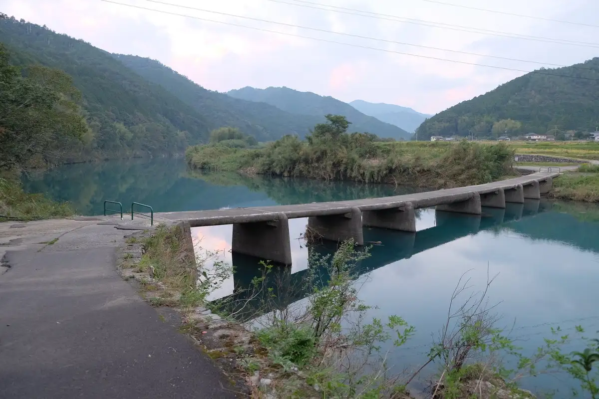
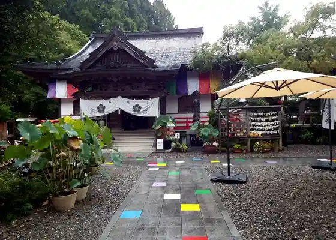
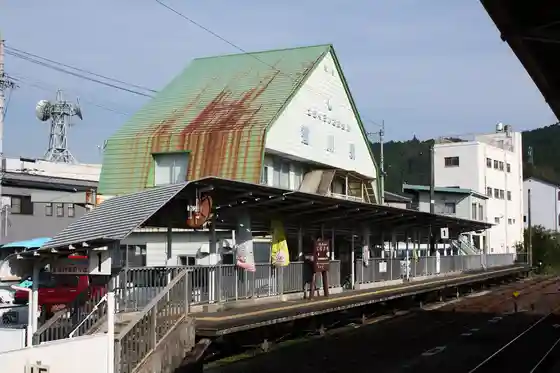
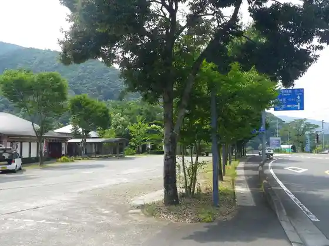

Shimanto Town
Shimanto Town · Kochi
Shimanto Town
Highlighted on the Kochi map.

Stay
Famiriirojji Hatago Ya Shimanto Town Mise
Dining
Pizzeria Lo-co
Kobako
Borugeri
Sakura
Musashi
Shokudo Hiragushi
Komadori
Yakiniku
Sights
Itto Tawara Chinkakyo
Iwamoto Tera

Kaiyo Do Hobii Kan Shimanto Town
Kubokawa Eki

Roadside Station Shimanto Town Taisho

Roadside Station Aguri Kubokawa